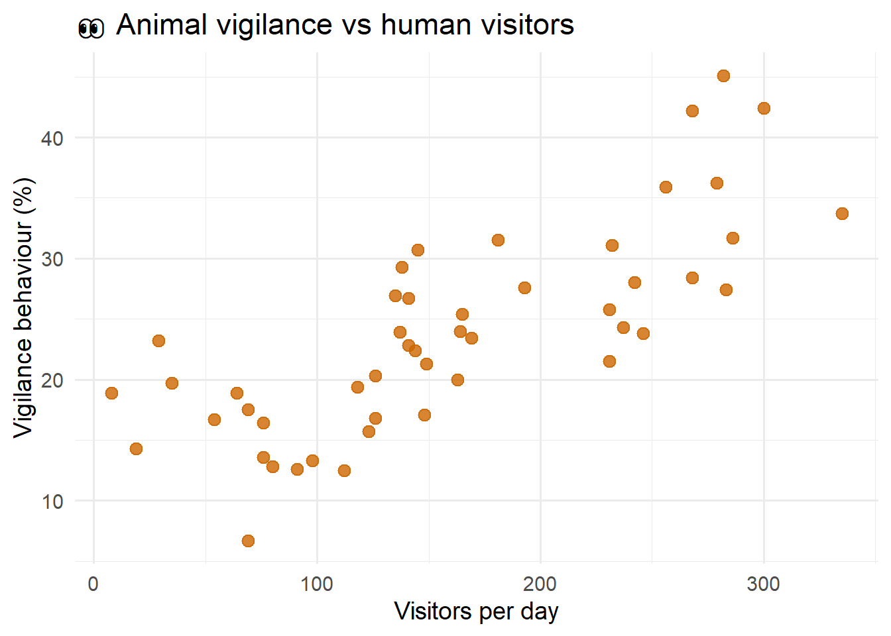
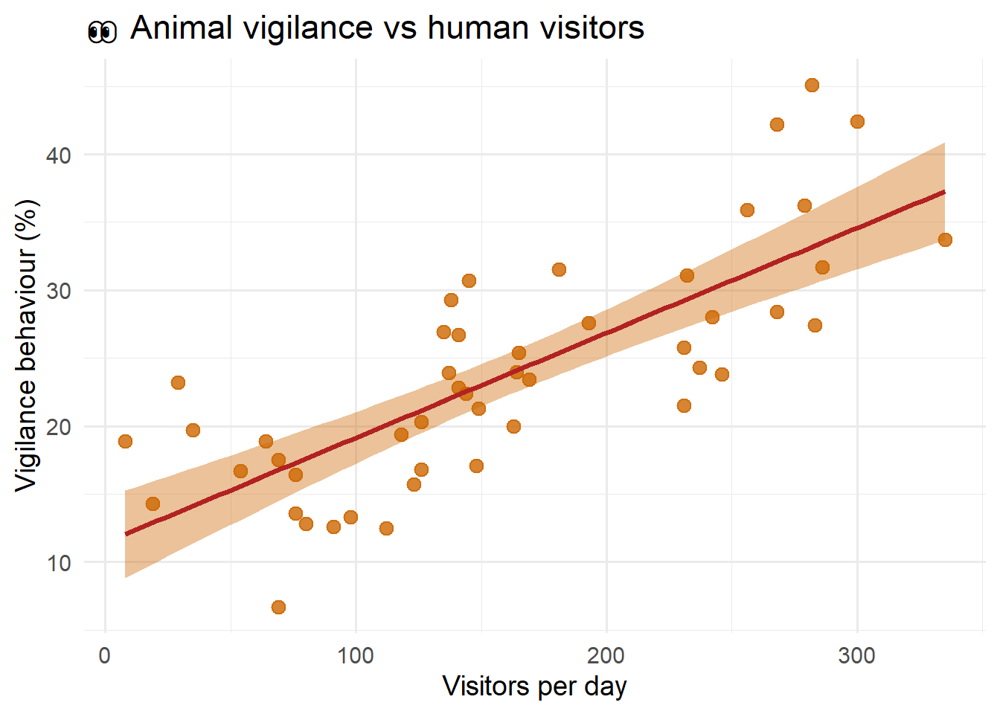
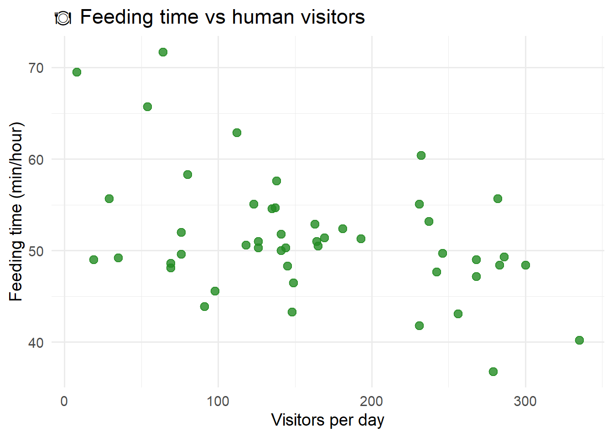
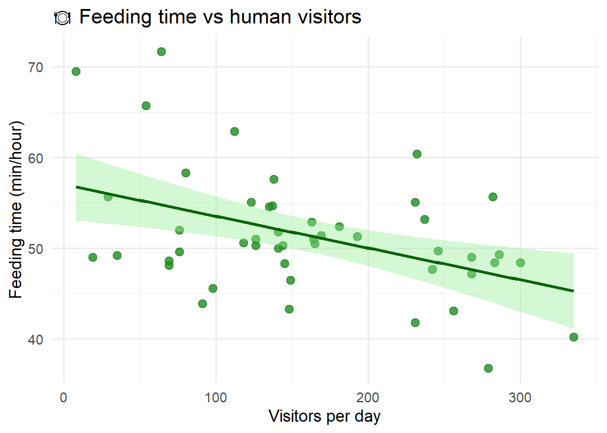
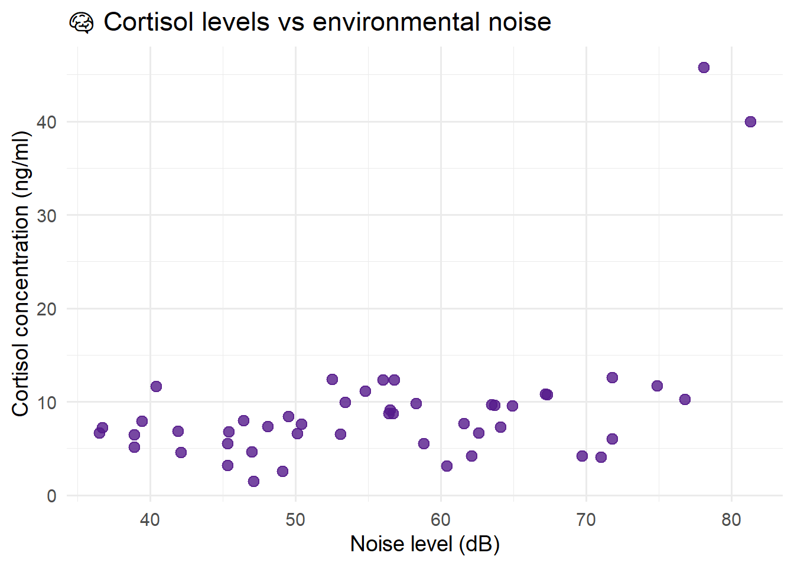
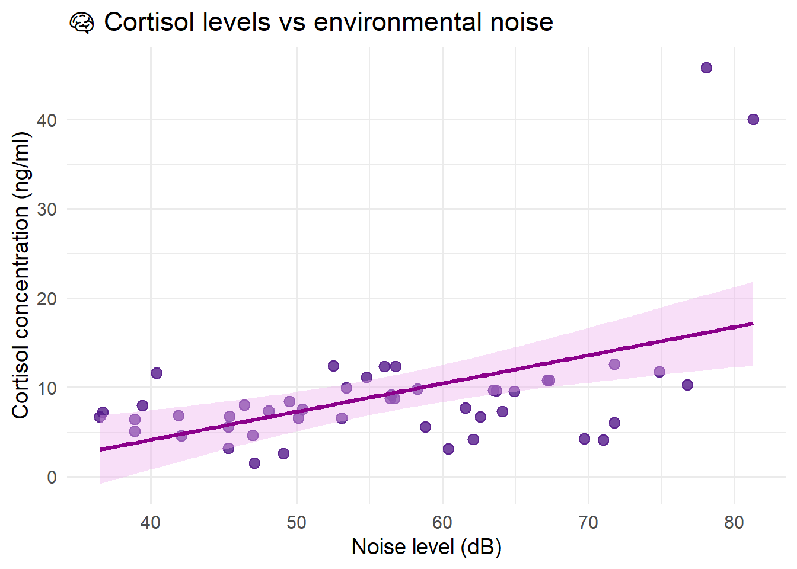
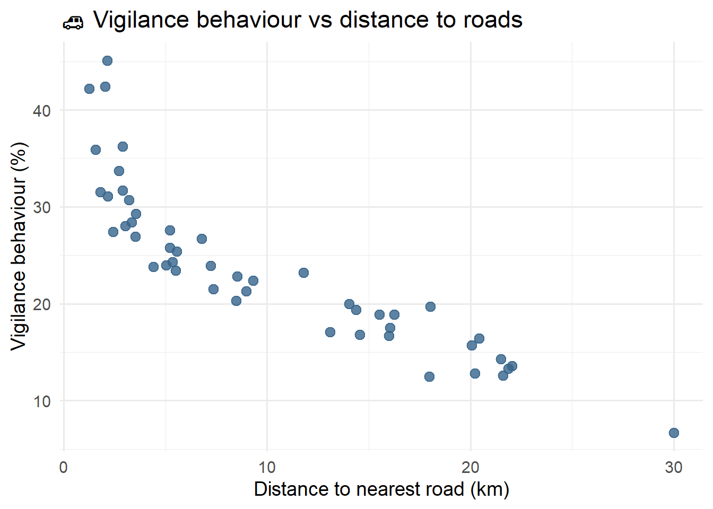
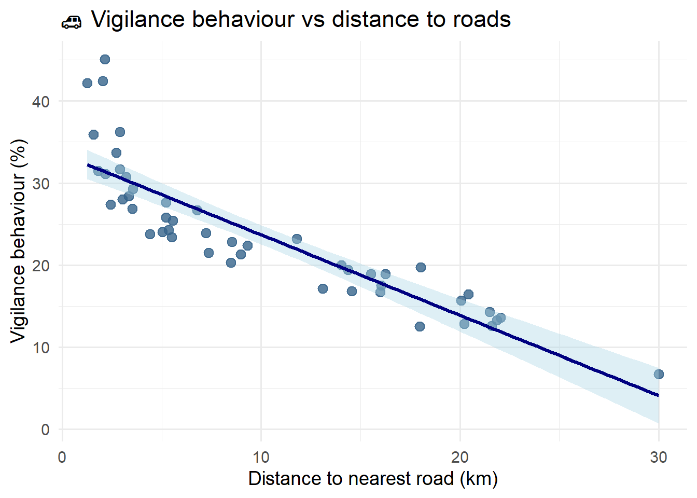
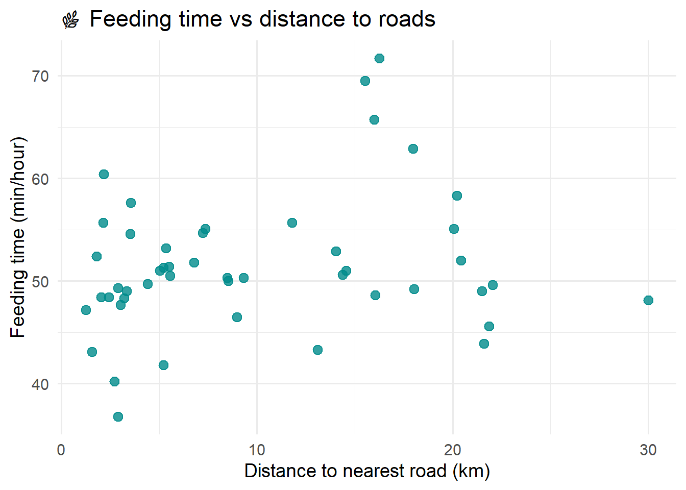
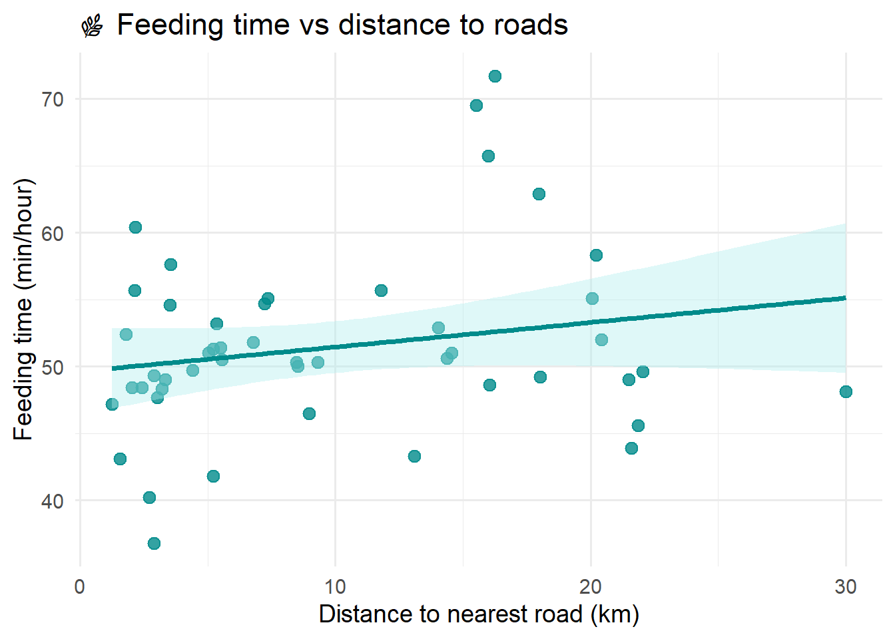

wildlife <- read.csv("wildlife_behaviour_practical.csv")Can We Predict Animal Behaviour?
Introduction
This week we will explore one of the most important ideas in modern biology: Can we predict biology?
Biologists are often interested in understanding whether one variable can help us predict another. For example:
Can temperature predict coral bleaching?
Can pollution predict biodiversity loss?
Can human activity predict animal stress?
Today, you will become behavioural ecologists studying how wildlife responds to human disturbance across protected natural areas.
Researchers collected data from several wildlife reserves with different levels of tourism and human activity. Your job is to investigate whether human presence can predict changes in animal behaviour.
The Dataset
Each row represents one wildlife reserve.
The dataset contains:
| Variable | Description |
|---|---|
| Visitors_per_day | Average number of visitors entering the reserve each day |
| Noise_level_dB | Average environmental noise level |
| Distance_to_road_km | Distance to the nearest major road |
| Vigilance_percent | Percentage of time animals spend scanning for danger |
| Feeding_time_min | Average feeding time per hour |
| Cortisol_ng_ml | Stress hormone concentration |
Load the dataset
(The file must be at the same folder where this Quarto file is stored)
Load packages
library(ggplot2)Warning: package 'ggplot2' was built under R version 4.5.3STEP 1 - SEE THE PATTERN
We will start with the question: Can human visitors predict vigilance behaviour on other animals?
Q0. Before looking at the data or fit the model, make a prediction.
I predict that as visitor numbers increase, vigilance behaviour will… ###
Possible response: Good answers will include the following elements: direction of the association between variables (e.g. increase/decrease/stay the same with increasing human disturbance), the magnitude (e.g. big/small increase/decrease in terms of how many visitors will make an actual impact to behaviour), the proportionality (e.g. the relationship is linear/exponential/sigmoidal…), and the expected variability (all reserves will behave in the same way, or not, and increased/decreased varibility is expected with increasing/decreasing human presence).
Visualise the relationship
ggplot(wildlife,
aes(x = Visitors_per_day,
y = Vigilance_percent)) +
geom_point(size = 3,
colour = "darkorange3",
alpha = 0.8) +
labs(title = "👀 Animal vigilance vs human visitors",
x = "Visitors per day",
y = "Vigilance behaviour (%)") +
theme_minimal(base_size = 14) 
Questions
Q1. Describe the relationship you observe.
Hint. Think about: direction, strength, variability. Are you surprised?
Q2. Propose a scientific hypothesis: Why might animals become more vigilant in areas with high human activity?
Possible response: Animals may perceive humans as potential threats or disturbances, causing them to spend more time scanning their environment.
Q3. Why do you think is it important to prepare a guess and look at the graph before running the statistics?
Possible response: Graphs help us understand the biological pattern and identify unusual observations or non-linear relationships. The data could contain some outliers that we might need to take a look at.
STEP 2 - BUILD THE MODEL
What does “a model” mean?
A linear model is “just” an equation that describes the relationship between two variables using a straight line. The model allows us to:
describe the relationship,
test whether the association is statistically significant,
and make predictions.
Have you ever fitted and used a model before? Perhaps a calibration curve in the lab? Think about how you used it to estimate unknown values.
Can you think of any other models you have used today?
(a few examples: estimating travel time using Google Maps, checking the weather forecast before leaving home, Spotify recommending songs you might like, TikTok deciding which videos appear on your feed, your phone’s face recognition, fitness watches estimating calories burned, Netflix recommending films, …). Did you know all of these systems rely on predictive models?
Fit the model
Let’s get back to the model we are building today. We were trying to see if there is any association between the number of visitors per day in multiple wildlife reserves and the time animals spend scanning for danger (i.e. vigilant behaviour) to understand human impact.
Take a look at the structure we use in R to fit a model between two variables:
model1 <- lm(Vigilance_percent ~ Visitors_per_day, data = wildlife)
summary(model1)
Call:
lm(formula = Vigilance_percent ~ Visitors_per_day, data = wildlife)
Residuals:
Min 1Q Median 3Q Max
-10.0570 -4.0928 -0.4968 3.5337 11.9168
Coefficients:
Estimate Std. Error t value Pr(>|t|)
(Intercept) 11.435776 1.661977 6.881 1.38e-08 ***
Visitors_per_day 0.077119 0.009232 8.353 8.96e-11 ***
---
Signif. codes: 0 '***' 0.001 '**' 0.01 '*' 0.05 '.' 0.1 ' ' 1
Residual standard error: 5.324 on 46 degrees of freedom
Multiple R-squared: 0.6027, Adjusted R-squared: 0.5941
F-statistic: 69.78 on 1 and 46 DF, p-value: 8.961e-11Visualise the model
ggplot(wildlife,
aes(x = Visitors_per_day,
y = Vigilance_percent)) +
geom_point(size = 3,
colour = "darkorange3",
alpha = 0.8) +
geom_smooth(method = "lm",
se = TRUE,
colour = "firebrick",
fill = "darkorange3") +
labs(title = "👀 Animal vigilance vs human visitors",
x = "Visitors per day",
y = "Vigilance behaviour (%)") +
theme_minimal(base_size = 14) `geom_smooth()` using formula = 'y ~ x'
Questions
Q4. What is the slope of the model?
Hint. Look in the coefficients table. If you feel overwhelmed by the amount of numbers go back to the plot and explore what the slope should be and look for a similar number in the table. There are lots of numbers here, is normal to feel overwhelmed at first sight.
Q5. What are the units of the slope?
Hint. The slope describes: change in Y per unit of X. Replace Y and X with your variables to obtain your units. In this case the slope represents the change in vigilance percentage per additional visitor per day.
Q6. Write the biological meaning of the slope as a sentence.
Possible answer: For every extra visitor that enters to the reserve, animals increase 0.077 % their vigilant behavior.
Q7. What does the p-value tell us?
The p-value tells us whether there is enough evidence to support the existence of a linear association between the two variables. In this case, the p-value suggests that there is a statistically significant linear relationship between visitor numbers and vigilance behaviour. In short: Evidence of association.
Note that The summary() output contains multiple p-values. For this practical, focus mainly on the p-value associated with the predictor variable (Visitors_per_day), because this tells us whether there is evidence of a linear association between the two variables. If you are curious, the intercept p-value tests whether the intercept differs from zero, while the p-value associated with the F-statistic tests whether the overall model explains significant variation. In simple linear regression, the slope p-value and the model p-value are usually identical.
Q8. What does the R² value tell us?
The R² value tells us how much variation in vigilance behaviour is explained by visitor numbers. In short: explanatory power. Do you remember how this is calculated?
Complete this table
Which value helps answer these questions?
| Question | Parameter | Value |
|---|---|---|
| Does X change with Y? | ||
| By how much? | ||
| Is the effect strong? | ||
| Can we trust the prediction? |
Answer: p-value, slope, R². The final one is more complex. A good answer for which parameter “Can we trust the prediction?”, would be: R², graph and biological knowledge.
Make a prediction
Models are made to be used. Use the model to predict vigilance behaviour at a reserve receiving 250 visitors/day. Take a look at the structure that we use to do it.
predict(model1, newdata = data.frame(Visitors_per_day = 200)) 1
26.8595 Questions
Q9. How much would the animals’ vigilant behaviour increase if a reserve is receiving 500 visitors/day?
Hint: Change the code above to take 500 instead of 250.
Q10. If we knew that the average of vigilant behaviour in animals is around 25% (i.e. they spend a quarter of their time scanning the environment), How many visitors can a reserve can take without trespassing that threshold?
Hint: There are different approaches here, since this is a reverse prediction question: the model usually predicts vigilance from visitors, but here you are given a vigilance threshold and asked to find the number of visitors. One possible way would be to start from the equation of the line and rearrange it to solve for x. Al alternative way would be to keep trying values in the function above until you find the visitors value that returns 25.
Q11. Would you trust this model to make management decisions about tourism in wildlife reserves?
Hint. There is no statistical truth here. Think about: variability, R², realism. If you think “Absolutely yes” consider: If a reserve is having around 500 visitors per day, are you certain that we have proof enough to demonstrate that the increase in vigilant percentage will be the same as predicted by our model? (response: no, that value is actually out of our modelled interval)
STEP 3 - BAD PREDICTIONS
Not all statistically significant relationships are biologically useful. Scientists must critically evaluate models before making conclusions or conservation decisions.
Example A - Significant but weak relationship
Visitors vs feeding time
ggplot(wildlife,
aes(x = Visitors_per_day,
y = Feeding_time_min)) +
geom_point(size = 3,
colour = "forestgreen",
alpha = 0.8) +
labs(title = "🍽️ Feeding time vs human visitors",
x = "Visitors per day",
y = "Feeding time (min/hour)") + theme_minimal(base_size = 14)
ggplot(wildlife,
aes(x = Visitors_per_day,
y = Feeding_time_min)) +
geom_point(size = 3,
colour = "forestgreen",
alpha = 0.8) +
geom_smooth(method = "lm",
se = TRUE,
colour = "darkgreen",
fill = "palegreen2") +
labs(title = "🍽️ Feeding time vs human visitors",
x = "Visitors per day",
y = "Feeding time (min/hour)") + theme_minimal(base_size = 14)`geom_smooth()` using formula = 'y ~ x'
model2 <- lm(Feeding_time_min ~ Visitors_per_day,data = wildlife)
summary(model2)
Call:
lm(formula = Feeding_time_min ~ Visitors_per_day, data = wildlife)
Residuals:
Min 1Q Median 3Q Max
-10.4645 -4.8238 -0.3097 2.3115 16.9047
Coefficients:
Estimate Std. Error t value Pr(>|t|)
(Intercept) 57.03702 1.90769 29.899 < 2e-16 ***
Visitors_per_day -0.03503 0.01060 -3.305 0.00184 **
---
Signif. codes: 0 '***' 0.001 '**' 0.01 '*' 0.05 '.' 0.1 ' ' 1
Residual standard error: 6.111 on 46 degrees of freedom
Multiple R-squared: 0.1919, Adjusted R-squared: 0.1744
F-statistic: 10.93 on 1 and 46 DF, p-value: 0.001844Questions
Q12. Is the relationship statistically significant?
Q13. Does the graph suggest strong predictive power?
Look carefully at how scattered the points are. Even if the relationship is significant, the model may not predict feeding time very well because the data are highly variable.
Q14. Why can statistically significant relationships still produce poor predictions?
Possible response: A model can detect a real association but still explain only a small proportion of the variation.
Example B - Outlier-driven relationship
Noise vs cortisol concentration
ggplot(wildlife,
aes(x = Noise_level_dB,
y = Cortisol_ng_ml)) +
geom_point(size = 3,
colour = "purple4",
alpha = 0.8) +
labs(title = "🧠 Cortisol levels vs environmental noise",
x = "Noise level (dB)",
y = "Cortisol concentration (ng/ml)") + theme_minimal(base_size = 14)
ggplot(wildlife,
aes(x = Noise_level_dB,
y = Cortisol_ng_ml)) +
geom_point(size = 3,
colour = "purple4",
alpha = 0.8) +
geom_smooth(method = "lm",
se = TRUE,
colour = "darkmagenta",
fill = "plum2") +
labs(title = "🧠 Cortisol levels vs environmental noise",
x = "Noise level (dB)",
y = "Cortisol concentration (ng/ml)") +
theme_minimal(base_size = 14)`geom_smooth()` using formula = 'y ~ x'
model3 <- lm(Cortisol_ng_ml ~ Noise_level_dB, data = wildlife)
summary(model3)
Call:
lm(formula = Cortisol_ng_ml ~ Noise_level_dB, data = wildlife)
Residuals:
Min 1Q Median 3Q Max
-9.8186 -3.2922 -0.6202 1.9091 29.6517
Coefficients:
Estimate Std. Error t value Pr(>|t|)
(Intercept) -8.48886 4.77292 -1.779 0.081923 .
Noise_level_dB 0.31546 0.08353 3.777 0.000455 ***
---
Signif. codes: 0 '***' 0.001 '**' 0.01 '*' 0.05 '.' 0.1 ' ' 1
Residual standard error: 6.775 on 46 degrees of freedom
Multiple R-squared: 0.2367, Adjusted R-squared: 0.2201
F-statistic: 14.26 on 1 and 46 DF, p-value: 0.0004548Questions
Q15. Does one observation appear to strongly influence the relationship?
Q16. Why can outliers be problematic in biological studies?
Reflection. Should scientists automatically remove outliers?
Possible discussion points: Sometimes outliers are measurement errors, sometimes they represent real biology, scientists must justify removing data.
Example C - Curved relationship
Distance to road vs vigilance
ggplot(wildlife,
aes(x = Distance_to_road_km,
y = Vigilance_percent)) +
geom_point(size = 3,
colour = "steelblue4",
alpha = 0.8) +
labs(title = "🚗 Vigilance behaviour vs distance to roads",
x = "Distance to nearest road (km)",
y = "Vigilance behaviour (%)") + theme_minimal(base_size = 14)
ggplot(wildlife,
aes(x = Distance_to_road_km,
y = Vigilance_percent)) +
geom_point(size = 3,
colour = "steelblue4",
alpha = 0.8) +
geom_smooth(method = "lm",
se = TRUE,
colour = "navy",
fill = "lightblue") +
labs(title = "🚗 Vigilance behaviour vs distance to roads",
x = "Distance to nearest road (km)",
y = "Vigilance behaviour (%)") + theme_minimal(base_size = 14)`geom_smooth()` using formula = 'y ~ x'
model4 <- lm(Vigilance_percent ~ Distance_to_road_km, data = wildlife)
summary(model4)
Call:
lm(formula = Vigilance_percent ~ Distance_to_road_km, data = wildlife)
Residuals:
Min 1Q Median 3Q Max
-5.3572 -2.5899 -0.2509 1.4502 13.7180
Coefficients:
Estimate Std. Error t value Pr(>|t|)
(Intercept) 33.47929 0.97338 34.40 < 2e-16 ***
Distance_to_road_km -0.98006 0.07855 -12.48 2.28e-16 ***
---
Signif. codes: 0 '***' 0.001 '**' 0.01 '*' 0.05 '.' 0.1 ' ' 1
Residual standard error: 4.034 on 46 degrees of freedom
Multiple R-squared: 0.7719, Adjusted R-squared: 0.767
F-statistic: 155.7 on 1 and 46 DF, p-value: 2.277e-16Questions
Q17. Does a straight-line model seem appropriate here?
Q18. Why might biological relationships be nonlinear?
Possible response: Biological systems are often complex and may involve thresholds, saturation effects, or multiple interacting factors.
Example D - No relationship
Distance to road vs feeding time
ggplot(wildlife, aes(x = Distance_to_road_km, y = Feeding_time_min)) +
geom_point(size = 3, colour = "darkcyan", alpha = 0.8) +
labs(title = "🌿 Feeding time vs distance to roads",
x = "Distance to nearest road (km)",
y = "Feeding time (min/hour)") +
theme_minimal(base_size = 14)
ggplot(wildlife, aes(x = Distance_to_road_km, y = Feeding_time_min)) +
geom_point(size = 3, colour = "darkcyan", alpha = 0.8) +
geom_smooth(method = "lm", se = TRUE, colour = "cyan4", fill = "paleturquoise") +
labs(title = "🌿 Feeding time vs distance to roads",
x = "Distance to nearest road (km)",
y = "Feeding time (min/hour)") +
theme_minimal(base_size = 14)`geom_smooth()` using formula = 'y ~ x'
model4 <- lm(Feeding_time_min ~ Distance_to_road_km, data = wildlife)
summary(model4)
Call:
lm(formula = Feeding_time_min ~ Distance_to_road_km, data = wildlife)
Residuals:
Min 1Q Median 3Q Max
-13.3573 -3.7872 -0.9553 2.8838 19.0961
Coefficients:
Estimate Std. Error t value Pr(>|t|)
(Intercept) 49.6285 1.6060 30.901 <2e-16 ***
Distance_to_road_km 0.1830 0.1296 1.412 0.165
---
Signif. codes: 0 '***' 0.001 '**' 0.01 '*' 0.05 '.' 0.1 ' ' 1
Residual standard error: 6.655 on 46 degrees of freedom
Multiple R-squared: 0.04154, Adjusted R-squared: 0.02071
F-statistic: 1.994 on 1 and 46 DF, p-value: 0.1647Questions
Q19. Is there evidence of a relationship?
Q20. Would this model be useful for prediction?
Reflection. Why is “no relationship” still scientifically useful? Knowing that a variable does not explain behaviour helps scientists eliminate hypotheses and improve future studies.
STEP 4 - THE FINAL CHALLENGE - Your Turn
You now have access to multiple variables describing:
human disturbance,
environmental conditions,
and animal behaviour.
Your challenge is to investigate your own biological question.
Available predictors
Choose ONE:
Visitors_per_day
Noise_level_dB
Distance_to_road_km
Available response variables
Choose ONE:
Vigilance_percent
Feeding_time_min
Cortisol_ng_ml
Your task:
1. Write your biological question
Can _____ predict ____?
2. Make a prediction BEFORE fitting the model
I predict that…
3. Adapt the code
Take one of the models we build above and replace the variable names with your chosen variables.
Visualise your model
Take one of the code for the plots we used above and replace the variable names with your chosen variables.
Questions
Q21. Is the relationship positive or negative?
Q22. Is the relationship statistically significant?
Q23. Does the model explain a large proportion of the variation?
Q24. Would you trust this model for biological prediction?
Think about: scatter, R², outliers, biological realism
Q25. Write your conclusion as scientific sentences. Add much detail as possible, including the consequences of this discovery for management and how your result has to be carefully taken, and extract potentially relevant numbers from the model.
FINAL REFLECTION
Throughout this year you have learned how scientists: compare groups, test hypotheses, quantify variation, and now build predictive models.
Today, you used biological data to investigate how animals respond to human activity, and used a model to make predictions about the natural world. Today we explored one predictor at a time. But in real ecosystems, many variables affect behaviour simultaneously. All of the tested variables may influence animal behaviour together.
Next year, you will learn how to analyse multiple predictors simultaneously, but do not forget the foundations of good science: form expectations, visualise the data, question the model, and always interpret the results biologically. Statistics is not about memorising equations, it is about understanding biological variation.